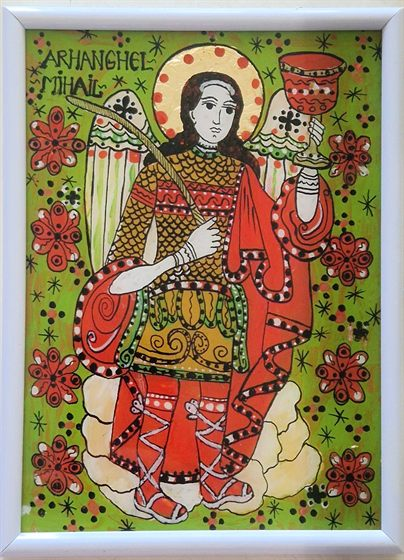
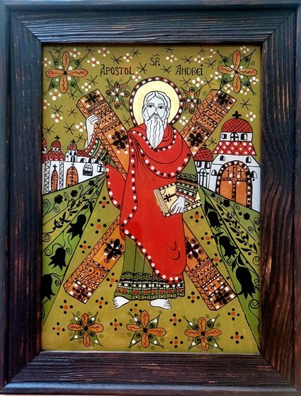
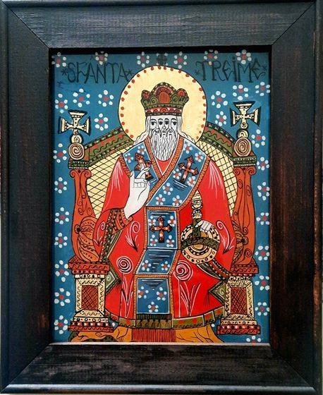
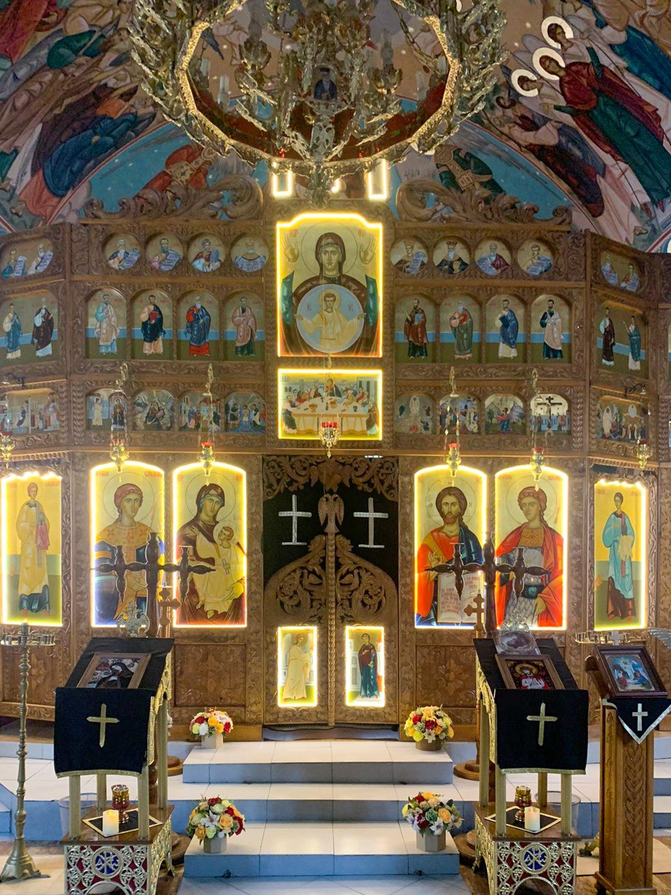
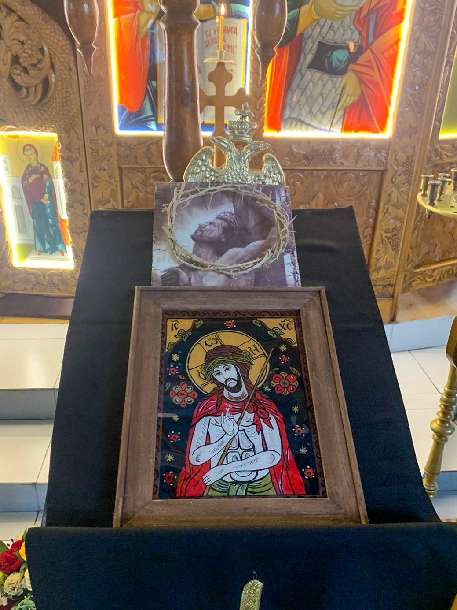

Orthodox icons painted in tempera on glass
The Byzantine Workshop of Icons on Glass
An icon painter inspired by the icons of the great Transylvanian painters.
- 2019the first icons, on the Annunciation
- ~300icons painted
- 5Transylvanian traditions of models

From the workshop
Recent works
Available
The Entry of the Lord into Jerusalem
Model: Arpașu de Sus

The Table of Paradise
Model: Nicula, 19th century

Saint Elijah the Prophet
Model: Early 19th century

The Burning Bush of the Mother of God

Saint Michael the Archangel

Saint Andrew the Apostle

The Descent of the Holy Spirit
Model: Nicula, 19th century

The Holy Trinity


In churches
Icons for churches
Many of the workshop's icons were painted for churches, where they stand for veneration and are decorated with flowers on feast days.
“One of the happiest days was the one when the church's priest sent me the photos!” Parishes and monasteries can order any iconographic theme.